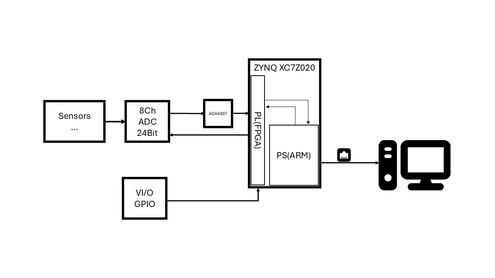
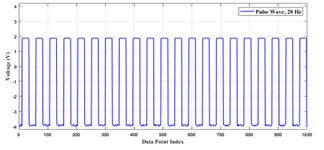
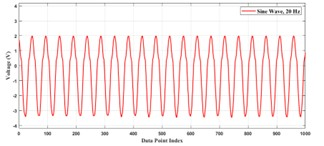
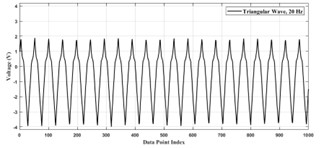
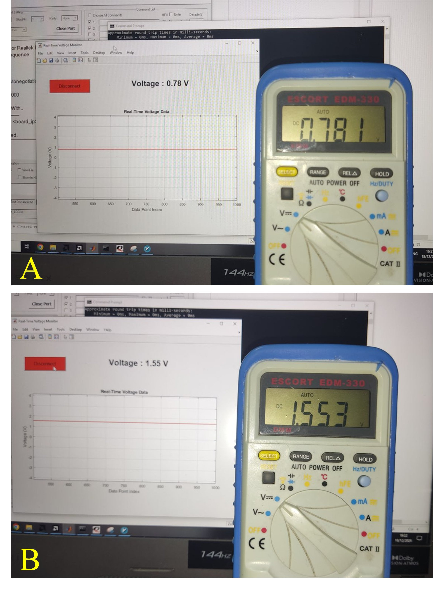
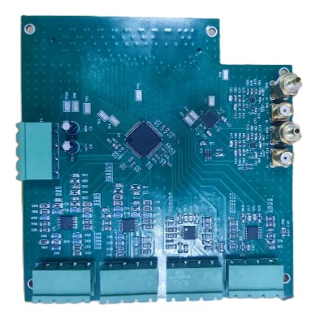

ZYNQ-Based Real-Time Data Logger
A high-speed, multi-channel data acquisition system designed using the ZYNQ XC7Z020 SoC and the 24-bit AD7768 ADC.
This system features a sampling rate of 256 kSPS and real-time data transfer over Ethernet, making it ideal for industrial measurement, power monitoring, and medical applications. It captures and processes analog signals using ADA4807 precision amplifiers and a delta-sigma ADC. The architecture efficiently bridges programmable logic and ARM processors for concurrent data processing and transmission.
- Powered by ZYNQ XC7Z020 SoC – Integrated ARM + FPGA system for high-speed processing.
- 24-bit AD7768 ADC – Delta-sigma ADC with exceptional resolution and noise performance.
- 256 kSPS Sampling Rate – Fast and accurate data acquisition for high-frequency signals.
- Ethernet (TCP/IP) Communication – Real-time data transfer using lwIP stack.
- Flexible Analog Front-End – ADA4807 amplifiers with configurable gain (×1 and ×10).
- Direct PL-to-PS Data Transfer – AXI_GPIO-based communication without DMA overhead.
- Software Integration – Qt and MATLAB-based interfaces for live display and configuration.
- Multi-Signal Support – Tested with sine, square, triangle, and DC signals.
- High Accuracy – Verified by comparing against precision voltmeter readings.






